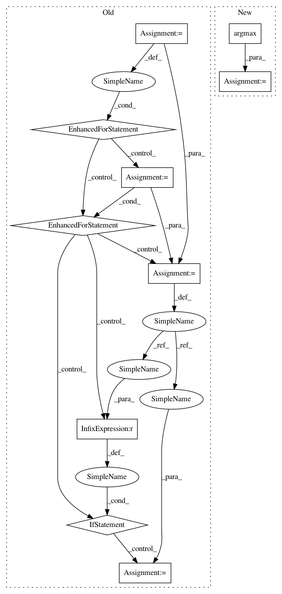

bba1901f835525551dde9ec1537d041abc88d293,deslib/static/oracle.py,Oracle,predict,#Oracle#Any#Any#,77
Before Change
y = self.enc_.transform(y)
predicted_labels = -np.ones(y.size, dtype=int)
// TODO: Vectorize Oracle code.
for sample_index, x in enumerate(X):
for idx, clf in enumerate(self.pool_classifiers_):
// If one base classifier predicts the correct answer, consider
// as a correct prediction
x_feat = x[self.estimator_features_[idx]].reshape(1, -1)
predicted = clf.predict(x_feat)[0]
if predicted == y[sample_index]:
predicted = int(predicted)
predicted_labels[sample_index] = predicted
break
predicted_labels[sample_index] = predicted
return self.classes_.take(predicted_labels)
def predict_proba(self, X, y):
Estimates the posterior probabilities for each class for each sample
After Change
for idx, clf in enumerate(self.pool_classifiers_)]
preds = np.asarray(preds).T
hit_miss = np.asarray(preds) == y.reshape(-1, 1)
idx_sel_classifier = hit_miss.argmax(axis=1)
predicted_labels = preds[np.arange(preds.shape[0]), idx_sel_classifier]
return self.classes_.take(predicted_labels.astype(int))
In pattern: SUPERPATTERN
Frequency: 3
Non-data size: 10
Instances
Project Name: scikit-learn-contrib/DESlib
Commit Name: bba1901f835525551dde9ec1537d041abc88d293
Time: 2021-04-08
Author: rafaelmenelau@gmail.com
File Name: deslib/static/oracle.py
Class Name: Oracle
Method Name: predict
Project Name: scikit-learn-contrib/DESlib
Commit Name: bba1901f835525551dde9ec1537d041abc88d293
Time: 2021-04-08
Author: rafaelmenelau@gmail.com
File Name: deslib/static/oracle.py
Class Name: Oracle
Method Name: predict
Project Name: ilastik/ilastik
Commit Name: 8a7c79adfd36ce229b846669412c52e69ec2e674
Time: 2013-02-12
Author: kemal.eren@iwr.uni-heidelberg.de
File Name: lazyflow/operators/classifierOperators.py
Class Name: OpSegmentation
Method Name: execute
Project Name: biocore/scikit-bio
Commit Name: c6a0d9f127ba7cac43e2bc3ab09549712ecc08f6
Time: 2014-06-23
Author: gregcaporaso@gmail.com
File Name: skbio/core/alignment/pairwise.py
Class Name:
Method Name: local_pairwise_align